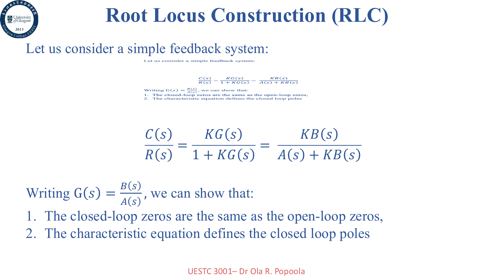

Lecture 7：Root Locus
Root locus 本质上是在看：当增益 \(K\) 从 0 变到无穷时，闭环极点怎么在复平面上移动。考试不会只让你“画大概”，通常还要你算 asymptotes、centroid、breakaway、imaginary-axis crossing 和稳定范围。

\[ \angle G(s)H(s)=(2q+1)180^\circ \]
\[ K=\frac{1}{|G(s)H(s)|} \]
\[ \theta_q=\frac{(2q+1)180^\circ}{n-m} \]
\[ \sigma_a=\frac{\sum \text{poles}-\sum \text{zeros}}{n-m} \]
Root Locus 六步法
- 写 \(L(s)=KG(s)H(s)\)，标 poles / zeros。
- 找实轴区间：右边 poles + zeros 个数为奇数才在 locus 上。
- 算 asymptotes 的数量、角度、centroid。
- 令 \(K(s)=-1/G(s)H(s)\)，解 \(\frac{dK}{ds}=0\) 找 breakaway。
- 用 Routh 或 \(s=j\omega\) 找 imaginary-axis crossing。
- 最后再连成图，并写稳定区间。
Lecture 8-9：Frequency Response 与 Nyquist
Nyquist 题的灵魂不是“背一个图形”，而是知道为什么要看 \(-1+j0\) 这个点。开环频率响应离这个点越近，闭环越危险。
\[ G(j\omega)=G(s)\big|_{s=j\omega} \]
\[ Z=N+P \]
\(P\)：开环右半平面极点数；\(Z\)：闭环右半平面极点数。
| 你要做的事 | 数学动作 | 结果用途 |
|---|---|---|
| 写 Nyquist 图 | 求 \(G(j\omega)\) 的实部、虚部、低频极限和高频极限 | 确定轨迹从哪来，到哪去 |
| 找临界稳定点 | 令 \(\operatorname{Im}G(j\omega)=0\)，找切负实轴的频率 | 进一步求极限增益 \(K\) |
| 判断稳定 | 数对 \(-1\) 的环绕数或比较 \(|KG(j\omega_c)|\) | 给出稳定的 K 区间 |
Lecture 9-10：Bode 图与时间常数形式
Bode 图是 Q4 的主战场。真正节省时间的做法，是在一开始就把传递函数改写成时间常数形式，这样 corner frequencies、 斜率变化和相位变化都会自动变清楚。
\[ |G|_{dB}=20\log_{10}|G| \]
\[ \frac{1}{s}\Rightarrow -20\text{ dB/dec},\ -90^\circ \]
\[ \frac{1}{1+sT}\Rightarrow \omega_b=\frac{1}{T} \]
\[ e^{-sT}\Rightarrow |G| \text{ 不变},\ \angle G=-\omega T \]
- 化时间常数形式。
- 找每个 corner frequency。
- 先画低频增益与基础斜率。
- 过每个零点加 \(+20\text{ dB/dec}\)，过每个极点加 \(-20\text{ dB/dec}\)。
- 相位逐个环节叠加，再读 \(\omega_{gc}\)、\(\omega_{pc}\)。
这一组 Lecture 必会
- 会完整画出 root locus 需要的几何元素，而不是只会报 poles / zeros。
- 会用 Routh 和 Nyquist 两条路都判断稳定区间。
- 会把传递函数改写成时间常数形式。
- 会从 Bode 图读 gain crossover、phase crossover、相位裕度和增益裕度。
- 知道 delay 只改相位不改幅值，这是 2023 题的关键点。